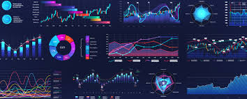
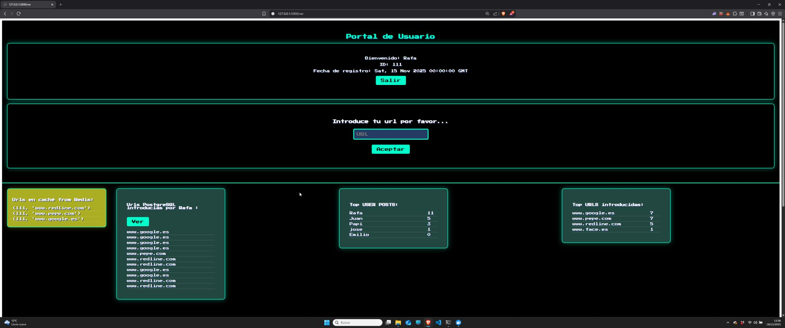
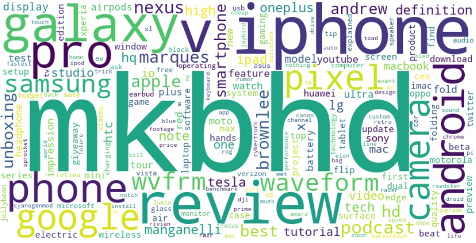
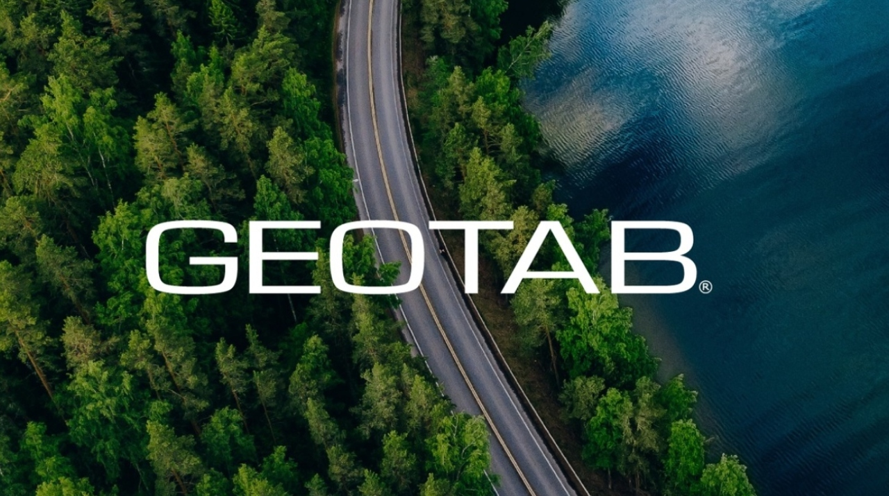

Data Analysis
Extracting insights, detecting patterns, trends and anomalies to support data-driven decisions.
I am currently studying the second year of the Bachelor’s Degree in Data Science at Universitat Carlemany.
Passionate about Engineering and Data Science, focused on building robust pipelines and scalable models that solve real-world problems.
Extracting insights, detecting patterns, trends and anomalies to support data-driven decisions.
Predictive analytics and Machine Learning to optimize processes and forecast outcomes.

Clear and interactive dashboards and reports for effective data communication.
Scalable architectures using Flask, Celery, Redis, SQL and NoSQL databases.
Supervised and unsupervised models, clustering, NLP and neural networks.
Time series modeling applied to crypto and financial markets.
Prediction of exam scores using Huber Regressor. Includes EDA, feature engineering, missing values handling and GridSearch optimization.

Asynchronous architecture using Flask, Celery, Redis and Supabase to handle high concurrency without database overload.

Sentiment analysis of YouTube comments using NLP, WordClouds, sarcasm detection and offensive language detection with XGBoost.
Machine Learning model predicting crop yield using environmental and climate data across multiple countries.
Classification model predicting loan default risk. Final AdaBoost model achieved 87% accuracy.

Real-time vehicle telemetry visualization using Geotab API, interactive charts and heatmaps.